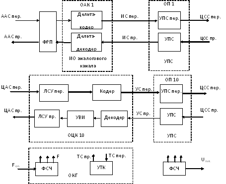

Тема №6. Устройство цифровой системы передачи П-331 «Импульс»
Занятие №2. Устройство и принцип работы аппаратуры образования каналов ТЧ.
Учебные вопросы:
Литература:
1. Назначение, состав и технические характеристики моноблока ИТ/А.
Аппаратура ИТ/А предназначена для передачи по десяти независимым цифровым каналам и трактам с номинальной скоростью передачи 48 кбит/с аналоговых сигналов тональной частоты и цифровых каналов со скоростью не более 48 кбит/с.
Аппаратура содержит оборудование образования 10 четырехпроводных каналов.
В зависимости от варианта поставки аппаратура различается по исполнениям:
- аппаратура, укомплектованная блоками аналоговых и цифровых каналов;
- аппаратура, укомплектованная блоками аналоговых каналов;
- аппаратура, укомплектованная блоками цифровых каналов.
Номинальная скорость передачи и приема цифровых станционных сигналов равна 48 кбит/с при относительной нестабильности не более ±5?10-5.
Форма линейных цифровых станционных сигналов – биимпульсная.
Окончания цифровых станционных стыков симметричные, входное со-противление 150 0м
Амплитуда цифровых станционных сигналов передачи равна 1 В на на-грузке 150 Ом.
Допустимая амплитуда цифровых станционных сигналов приема от 0,1 до 1,15 В.
Исправляющая способность входных устройств станционных окончаний (для искажений типа преобладания) равна ±25 % от длительности единичного элемента биимпульсного сигнала.
В аппаратуре предусмотрена возможность ее дистанционного и местного включения.
В аппаратуре предусмотрена выдача на пульт управления и внешнего отображения следующих сигналов:
- индикации включения;
- индикации аварии аппаратуры.
Электропитание аппаратуры ИТ/А и напряжение опорной частоты 5 МГц подаются от аппаратуры ИП или от сети постоянного тока с напряжением 27 В и аппаратуры ИГ.
Потребляемая мощность не более 28 Вт в рабочем состоянии и не более 35 Вт в режиме проверки органов индикации.
Габариты аппаратуры 640?180?290 мм (без кабельных частей разъемов).
Масса аппаратуры не более 23 кг.
Аппаратура допускает работу в условиях:
- температуры от минус 30 до плюс 50°С;
- влажности не более 98 % при температуре не выше 35°С;
- атмосферного давления не ниже 61 кПа (460 мм рт. ст);
- вибрационных нагрузок с ускорением до 49 м/с2 в диапазоне частот от 5 до 300 Гц;
- ударных нагрузок с ускорением до 147 м/с2 при длительности импульса до 10 мс.
Электрические характеристики аналоговых каналов:
- окончания каналов четырехпроводные, номинальный уровень на входе канала в оконечном режиме минус 13дБ, в режиме транзита – плюс 4 дБ;
- входы и выходы каналов симметричные, затухание асимметрии не ме-нее 43 дБ;
- номинальное значение входного и выходного сопротивлений 600 Ом, затухание несогласованности не менее 20 дБ.
- эффективно передаваемая полоса частот 0,3 - 3,4 кГц.
- частотная характеристика остаточного усиления для одного переприемного участка при номинальном уровне передачи удовлетворяет требованиям, приведенным в таблице 1;
Таблица 1
| Полоса частот, кГц | Отклонение остаточного усиления от значения его на частоте 0.8 кГц, дБ |
|---|---|
| от 0,3 до 0,4 | + 0,6 – 1,4 |
| свыше 0,4 до 0,6 | + 0.6 – 0,8 |
| от 0,6 до 2,4 | ±0,6 |
| от 2,4 до 3,0 | от 2,4 до 3,0 |
| от 3,0 до 3,4 | ± 1,4 |
- остаточное усиление аналоговых каналов в оконечном режиме при номинальном уровне сигнала с частотой 800 Гц равно 17 дБ и 0 дБ в режиме транзита;
- изменение остаточного усиления за 30 суток работы не более ±1 дБ;
- остаточное усиление канала на частоте 0,8 кГц постоянно с точностью ±0,5 дБ в диапазоне уровней сигнала от плюс 3 до минус 15 дБ, ±1 дБ от минус 15 до минус 25 дБ и ±3 дБ от минус 25 до 30 дБ;
- защищенность от внятных искажений не более 1,5 %, в том числе не более 1,0 % по третьей гармонике при номинальном уровне передачи сигнала с частотой 800 Гц;
- уровень шума в свободном канале не более минус 50 дБ;
- защищенность от шумов квантования для синусоидального сигнала с частотой 800 Гц не менее 20 дБ в диапазоне уровней входного сигнала от минус 30 до минус 25 дБ и не менее 25 дБ от минус 25 до плюс 3 дБ.
Электрические характеристики цифровых каналов:
- скорость передачи цифровых абонентских сигналов 1,2, 2,4, 4,8, и 9,6 кбит/с;
- окончания цифровых каналов симметричные, входное сопротивление 150 Ом;
- амплитуда цифрового абонентского сигнала передачи равна 1 В на нагрузке 150 Ом;
- допустимая амплитуда цифрового абонентского сигнала приема от 0,1 до 1,15 В;
- исправляющая способность для искажений вида преобладания не менее ±25 % от единичного элемента биимпульсного сигнала (половина тактового периода);
- фазовые дрожания на выходе канала составляют не более ±12 % от длительности единичного элемента биимпульсного сигнала.
2. Структурная схема моноблока ИТ/А.
Аппаратура ИТ/А содержит десять комплектов индивидуального канального оборудования и групповое оборудование. Состав аппаратуры:
- блок ОАК – оборудование аналогового канала;
- блок ОЦК – оборудование цифрового канала;
- блок ОП – оборудование преобразования сигнала;
- блок ОГК – контрольного и генераторного оборудования;
- блок ФРП – фильтров радиопомех;
- блок ПБ – блок питания.
Преобразование аналогового абонентского сигнала в цифровой 48кбит/с производится методом адаптивной слоговой дельта-модуляции.
Преобразование цифрового абонентского сигнала со скоростями 1,2; 2,4; 4,8 или 9,6 кбит/с в цифровой станционный сигнал со скоростью 48 кбит/с осуществляется методом скользящего индекса с подтверждением.
Принцип действия аппаратуры поясняет структурная схема на рис. 1.
Рис. 1. Структурная схема аппаратуры ИТ/А
Состав аппаратуры:
- десять комплектов индивидуального оборудования, из которых условно показаны один комплект индивидуального оборудования аналогового канала (блок ОАК) и один комплект индивидуального оборудования цифрового канала (блок ОЦК);
- десять комплектов устройств преобразования сигналов (УПС1-УПС10 –блоки ОП);
- групповое оборудование (блок ОГК).
Оборудование аналогового канала состоит из дельта-кодера и дельта-декодера.
Оборудование цифрового канала содержит:
- ЛСУ пер. – линейные согласующие устройства передачи;
- ЛСУ пр. – линейные согласующие устройства приема;
- кодер и декодер цифрового сигнала;
- УВИ – устройство восстановления интервалов.
Комплект устройств преобразования сигналов состоит из соответствую-щих устройств передачи и приема (УПС пер. и УПС пр..).
Групповое оборудование содержит:
- ФСЧ – формирователь сетки частот;
- УТК – устройство тестового контроля;
- УП – устройство электропитания.
Аналоговый абонентский сигнал передачи через фильтр радиопомех (ФРП) поступает на дельта-кодер. Цифровой сигнал кодера со скоростью передачи 48 кбит/с поступает в УПС пер, где преобразуется в биимпульсный линейный цифровой станционный сигнал передачи.
Линейный цифровой станционный сигнал приема в УПС пр. преобразуется в униполярный сигнал. Этот сигнал поступает в дельта-декодер и преобразуется им в аналоговый абонентский сигнал приема.
Цифровой абонентский сигнал передачи поступает в передающую часть оборудования цифрового канала. ЛСУ пер. восстанавливает принятый абонентский биимпульсный сигнал. Устройство кодирования сигнала (кодер) преобразует информационную последовательность с выхода ПСУ пер. методом скользящего индекса с подтверждением. Выходной сигнал кодера с помощью УПС пер. преобразуется в линейный станционный сигнал передачи. Станционный сигнал приема поступает через УПС пр. в приемную часть оборудования цифрового канала. Устройство декодирования сигнала (декодер) осуществляет предварительное восстановление передаваемого сигнала.
Устройство восстановления интервалов (УВИ) уменьшает краевые искажения восстановленного сигнала. Униполярный биимпульсный сигнал с выхода УВИ в ЛСУ пр. преобразуется в линейный цифровой абонентский сигнал приема.
Формирователь сетки частот, используя в качестве исходного внешний сигнал опорной частоты FОП, формирует все тактовые сигналы, необходимые для работы аппаратуры.
Устройство тестового контроля позволяет производить проверку отдельных каналов или канального оборудования данного моноблока. УТК переключает оборудование проверяемого канала в режим контроля, вырабатывает тестовый сигнал передачи (ТС пер.) (аналоговый при проверке аналогового канала или цифровой при проверке цифрового канала) и, анализируя принимаемый тестовый сигнал (ТС пр.) индицирует состояние проверяемого канала.
Устройство питания обеспечивает аппаратуру необходимыми источниками питания, используя в качестве первичного внешний с номинальным значением напряжения 27 В.